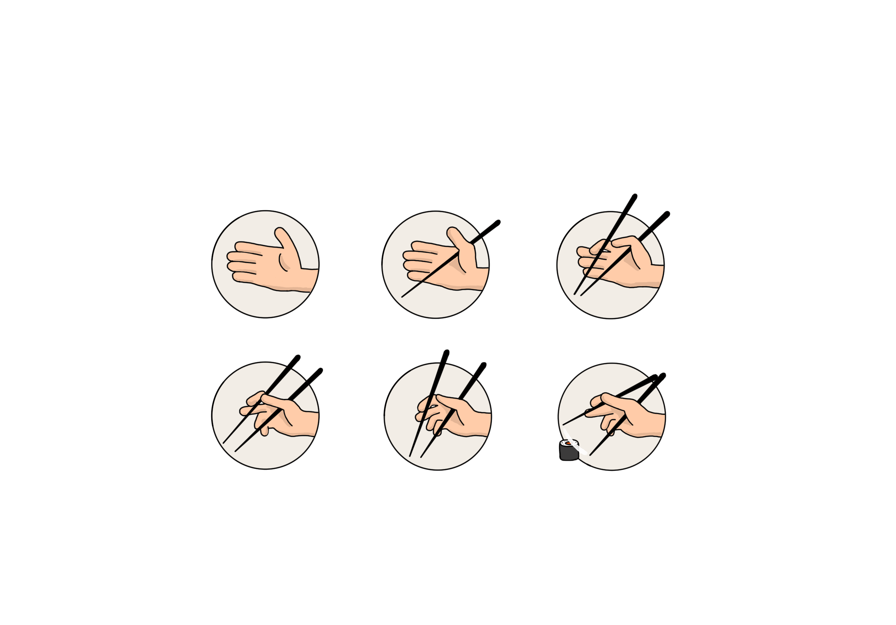

6 trins guide til: spisepinde
Drop gaflen på fem minutter og bliv professionel spisepind-spiser!
- Hold din dominerende hånd, som om du vil give hånd med nogen
- Put den første spisepind under din tommeltot og lad den hvile på håndfladen
- Hold den anden spisepind mellem din tommeltot og pegefinger
- Bøj din ringefinger og lillefinger, og skub ringefingeren under den nederste spisepind
- Put din lange finger under den øverste spisepind
- Bevæg den øverste spisepind op og ned for at få et grib på maden